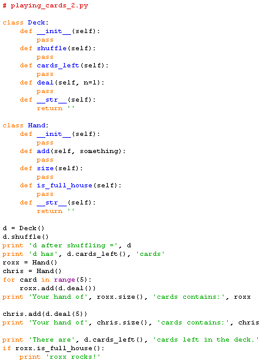

Adding in the __str__ methods gives us:

which when run produces,
>>> d after shuffling = d has None cards Your hand of None cards contains: Your hand of None cards contains: There are None cards left in the deck. >>>
Note that we can't use pass in the __str__ methods because
they are required to return a string, so instead we return a null string in
each one.